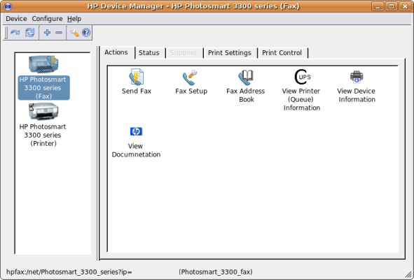
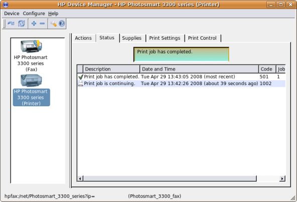
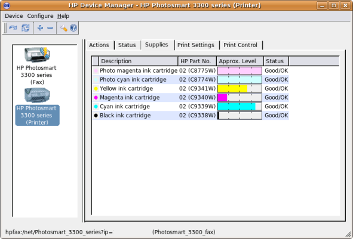
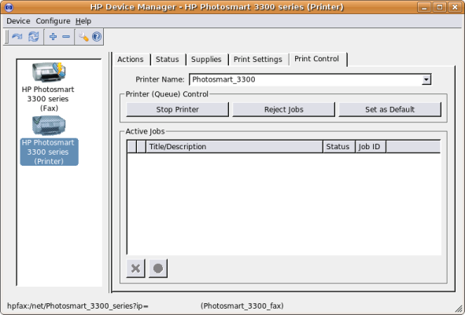

HP Linux Imaging and Printing (HPLIP) Help
Using HP Device Manager (hp-toolbox)
The HP Device Manager provides access to user-adjustable product settings and administrative tools such as ink/toner level and other features.The example screenshots that follow are for a specific HP Photosmart product. Obviously, the functions and tools available within the Actions Tab, will vary from product to product depending on product features and functions available.
This is the Actions Tab. From here you can select the various functions and tools for your printer.

This is the Actions Tab for the configured Fax Queue.

Here is the Status Tab. From here you can see the status of the printer and any previous print job status.

Here is the Supplies Tab. From here you can see the current ink or toner level of your printer. Not all printer models are supported.

This is the Print Settings Tab. From here you can control printers settings such as quality level, page orientation, media size, etc.

Here is the Print Control Tab. From here you can stop the printer, reject jobs, etc.
